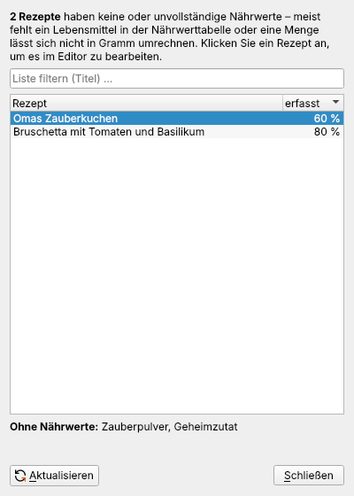
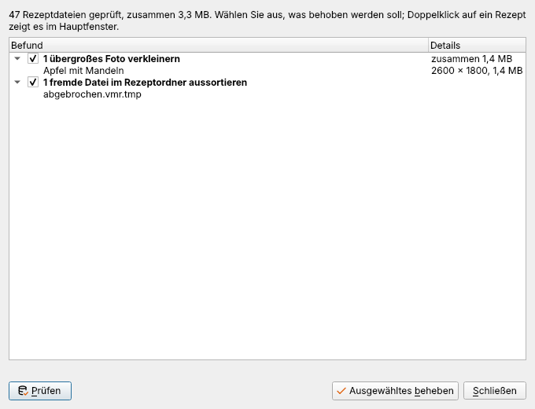
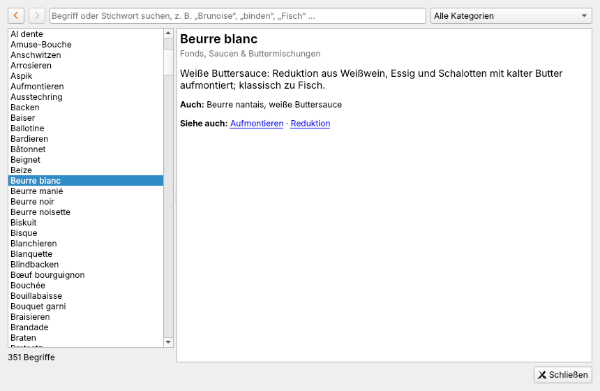
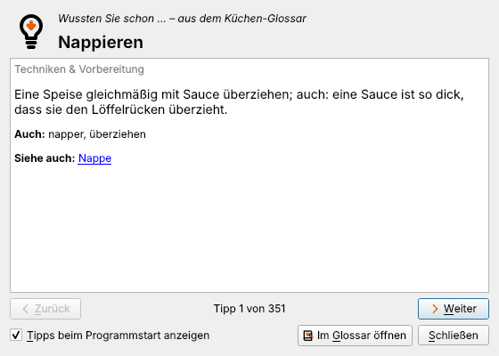
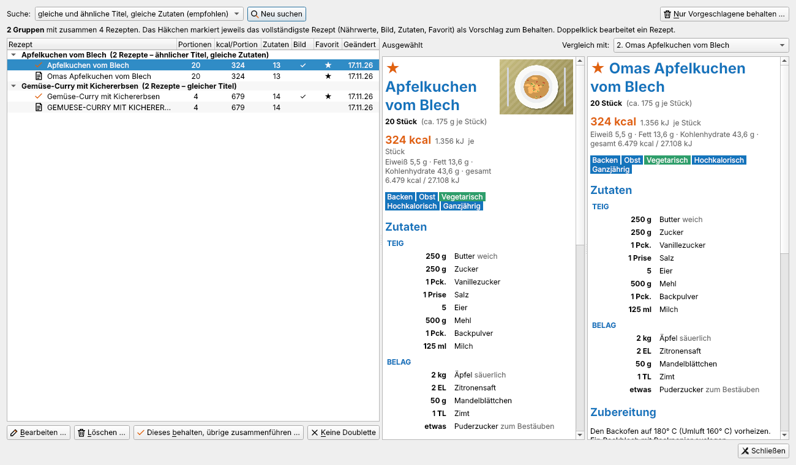
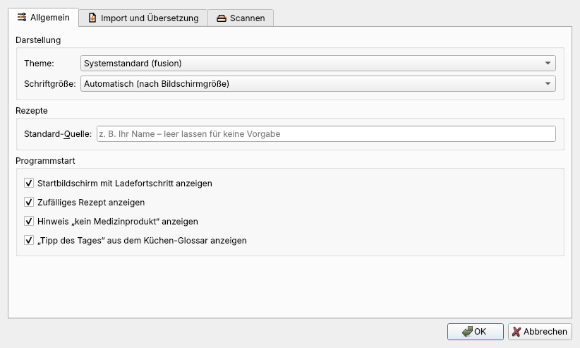
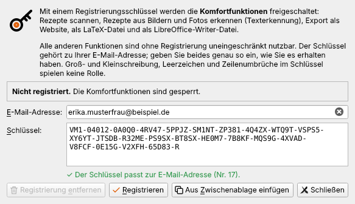

Extras und Einstellungen
Rezepte ohne Nährwerte oder Zutatenliste bearbeiten
Zwei Listen helfen, eine große Sammlung nach und nach zu vervollständigen:
- Extras → Rezepte ohne Nährwerte bearbeiten … zeigt alle Rezepte mit Zutaten, bei denen für keine oder nicht alle Zutaten Nährwerte bekannt sind. Die Spalte erfasst nennt den Anteil der Zutaten mit Nährwerten (sortierbar, die unvollständigsten zuerst); unter der Liste stehen die Zutaten ohne Nährwerte des gewählten Rezepts.
- Extras → Rezepte ohne Zutatenliste bearbeiten … zeigt alle Rezepte ohne eine einzige Zutat, darunter den Anfang der Zubereitung.

Beide Listen öffnen sich rechts neben dem Hauptfenster (passt es nicht, am rechten Bildschirmrand) und bleiben offen, während Sie weiterarbeiten; jede Liste gibt es nur einmal – ein zweiter Aufruf holt sie nach vorn. Ein Klick auf ein Rezept (oder die Eingabetaste) öffnet es im Editor. Nach dem Speichern aktualisiert sich die Liste von selbst: Erledigte Rezepte verschwinden, die Auswahl rückt zum nächsten. Das Filterfeld sucht im Titel.
Typische Ursachen für fehlende Nährwerte: Das Lebensmittel steht nicht in der Nährwerttabelle (im Editor zuordnen oder eigenes Lebensmittel anlegen), oder die Menge lässt sich nicht in Gramm umrechnen („1 Schuss“, „1 Bund“ bei einem Lebensmittel ohne Stückgewicht). Nach einem Programm-Update mit erweiterter Tabelle hilft oft schon Alle Rezepte abgleichen.
Datenbank prüfen
Eine ViviaMeals-Datenbank ist ein Ordner mit einer Datei je Rezept; eine „Reorganisation“ wie bei klassischen Datenbanken braucht sie nicht – das Inhaltsverzeichnis gleicht ViviaMeals bei jedem Öffnen selbst ab. Mit der Zeit kann sich aber einiges ansammeln. Extras → Datenbank prüfen … findet es:
- übergroße Fotos – länger als 1200 Pixel oder größer als 350 KB; sie werden auf 1000 Pixel verkleinert, was für Bildschirm, Website und Druck reicht und Platz sowie Abgleichszeit spart,
- unlesbare Fotos – das Rezept bleibt, nur das Foto wird entfernt,
- unlesbare Rezeptdateien – beschädigt oder leer; sie erscheinen nicht in der Rezeptliste,
- fremde Dateien im Rezeptordner, z. B. Reste abgebrochener Speichervorgänge,
- leere Rezepte ohne Titel, Zutaten und Zubereitung (standardmäßig nicht ausgewählt).

Die Prüfung selbst verändert nichts. Danach zeigt der Dialog die Befunde in Gruppen mit Häkchen; ein Doppelklick auf ein Rezept zeigt es im Hauptfenster. Ausgewähltes beheben führt die gewählten Schritte aus. Nichts wird endgültig gelöscht: Dateien und leere Rezepte landen im Unterordner aussortiert/<Datum> der Datenbank, der Dialog verlinkt ihn. Zum Schluss baut ViviaMeals das Inhaltsverzeichnis neu auf.
Ist ein Abgleich eingerichtet, werden verkleinerte Fotos beim nächsten Abgleich hochgeladen; aussortierte Rezepte gelten dann als gelöscht und verschwinden auch auf den anderen Geräten. Der Ordner aussortiert selbst wird nicht abgeglichen.
Unabhängig davon gilt: Die beste Pflege ist eine Sicherung. Weil die Datenbank ein normaler Ordner ist, genügt es, ihn gelegentlich zu kopieren oder zu zippen.
Küchen-Glossar
Hilfe → Küchen-Glossar … (Strg+Umschalt+G) erklärt rund 350 Fachbegriffe der gehobenen Küche – von Arrosieren über Brunoise, Beurre blanc und Consommé bis Ziselieren, dazu die Posten der Küchenbrigade, Begriffe aus Menü und Service, Pâtisserie, Geräte und Würzmittel.

- Suchen: Tippen Sie einen Begriff oder ein Stichwort ins Suchfeld (Strg+F). Groß- und Kleinschreibung und Akzente spielen keine Rolle – „bechamel“ findet Sauce béchamel, „oeuf poche“ Œuf poché. Gesucht wird im Begriff, in anderen Schreibweisen („Mehlschwitze“ findet Roux) und in der Erklärung; Treffer im Begriff stehen oben. Mehrere Wörter grenzen die Suche ein.
- Kategorie: Die Auswahl rechts zeigt nur Garverfahren, Schneidetechniken, Saucen, Pâtisserie, Küchenbrigade usw.
- Verweise: Unter Siehe auch führen Links zu verwandten Begriffen; die Pfeile oben links blättern zurück und vor (Alt+Links/Alt+Rechts).
Das Glossar ist ein eigenes Fenster und kann neben dem Rezept offen bleiben.
Tipp des Tages
Nach dem Programmstart – sobald die Datenbank geladen ist und Start-Hinweise beantwortet sind – zeigt ViviaMeals einen zufälligen Begriff aus dem Küchen-Glossar. Weiter zeigt einen weiteren zufälligen Begriff, Zurück die schon gezeigten. Im Glossar öffnen (oder ein Klick auf einen Verweis) springt ins Küchen-Glossar. Jederzeit erreichbar über Hilfe → Tipp des Tages ….

Abschalten lässt sich der Tipp mit dem Häkchen Tipps beim Programmstart anzeigen im Dialog oder unter Extras → Einstellungen → Programmstart.
Doubletten suchen
Extras → Doubletten suchen … findet mehrfach vorhandene Rezepte – typisch nach dem Import mehrerer Sammlungen.

Als Doublette gilt:
- ein gleicher Titel – Groß- und Kleinschreibung, Satzzeichen und Umlaut-Schreibweise spielen keine Rolle („Käsekuchen“ = „KAESEKUCHEN!“);
- ein ähnlicher Titel (Tippfehler, Zusätze wie „Omas …“) und weitgehend gleiche Zutaten;
- gleiche Zutaten (mindestens fünf) unter anderem Namen, z. B. „Pfannkuchen“ und „Eierkuchen“.
Die Suchstufe bestimmt, wie streng verglichen wird: „nur gleiche Titel“ (sicher), „empfohlen“ oder „großzügig“ (findet mehr, auch Fehltreffer).
Links stehen die Gruppen, darunter die Rezepte mit Portionen, kcal, Zutatenzahl, Bild, Favorit und Änderungsdatum. Das Häkchen markiert das vollständigste Rezept als Vorschlag zum Behalten. Rechts werden zwei Rezepte nebeneinander verglichen.
- Bearbeiten und Löschen (mehrere mit Strg oder Umschalt auswählbar).
- Dieses behalten, übrige zusammenführen: Das gewählte Rezept bleibt; fehlendes Bild, Quelle, Zubereitungszeit, alle Tags und die Favoriten-Markierung der übrigen werden übernommen, dann werden die übrigen gelöscht. Eine Rückfrage zeigt vorher genau, was geschieht.
- Keine Doublette(n): Gruppe bzw. Rezept wird künftig nicht mehr gemeldet.
- Nur Vorgeschlagene behalten … (oben rechts): räumt alle Gruppen auf einmal auf. Behalten wird in jeder Gruppe nur das Rezept mit dem Häkchen; alle übrigen werden nach einer Sicherheitsabfrage unwiederbringlich gelöscht – ohne etwas zu übernehmen. Die Abfrage nennt die Zahl der Rezepte, unter Details stehen die Titel. Steht ein Rezept in mehreren Gruppen und ist in einer davon vorgeschlagen, bleibt es erhalten.
Tipp: Vorher die Gruppen kurz durchsehen und Fehltreffer mit Keine Doubletten ausnehmen – besonders bei der Suchstufe „großzügig“. Wer ganz sicher gehen will, kopiert vorher den Datenbankordner.
Alle Rezepte auf einmal bearbeiten
| Befehl | Wirkung |
|---|---|
| Extras → Datenbank nach fehlenden Lebensmitteln durchsuchen … | Zutaten ohne Lebensmittel als anklickbare Tabelle, auch als Textdatei (Fehlende Lebensmittel finden) |
| Extras → Alle Rezepte mit der Lebensmitteldatenbank abgleichen … | Zutaten neu zuordnen, Nährwerte und Tags korrigieren, mit Übersicht (Alle Rezepte abgleichen) |
| Extras → Mahlzeit- und Nährwert-Tags für alle Rezepte ergänzen … | Tags nachholen, mit Vorschau der Anzahl |
| Extras → Saison-Tags für alle Rezepte vergeben … | frühling, sommer, herbst, winter, ganzjährig nach den frischen Zutaten (Saison-Tags) |
| Extras → Umlaute in allen Rezepten korrigieren … | „Kaesespaetzle“ → „Käsespätzle“, mit Beispielen und Rückfrage |
| Extras → Fremdsprachige Rezepte mit DeepL übersetzen … | nennt Anzahl und Zeichenmenge und fragt vor dem Senden |
Alle Sammelaktionen zeigen einen Fortschrittsbalken und lassen sich abbrechen.
Datenbank leeren
Datei → Datenbank leeren … löscht alle Rezepte der geöffneten Datenbank. Zur Sicherheit müssen Sie den Namen der Datenbank eintippen, erst dann wird Alle Rezepte löschen aktiv. Vorher legt ViviaMeals auf Wunsch (Vorgabe) eine Sicherungskopie im Unterordner sicherung-JJJJ-MM-TT-hhmmss an. Wiederherstellen lassen sich die Rezepte über Datei → Import → ViviaMeals-Rezept (.vmr) importieren ….
Ist der Abgleich eingerichtet, werden die Rezepte beim nächsten Abgleich auch auf den anderen Geräten gelöscht.
Einstellungen
Extras → Einstellungen … (Strg+, bzw. ⌘+, unter macOS) hat drei Reiter.

Allgemein
- Darstellung: Theme und Schriftgröße (automatisch oder 85–140 %).
- Rezepte: Standard-Quelle für Rezepte ohne Quellenangabe (Quelle und Standard-Quelle).
- Programmstart: Startbildschirm mit Ladefortschritt anzeigen; zufälliges Rezept anzeigen; Hinweis „kein Medizinprodukt“ anzeigen; „Tipp des Tages“ aus dem Küchen-Glossar anzeigen (Tipp des Tages).
Import und Übersetzung
- Englische Rezepte ohne DeepL umrechnen und übersetzen.
- Deutsche Rezepte ohne Umlaute korrigieren.
- Tags vegan/vegetarisch/fleischgerichte/fisch, Mahlzeit-Tags, Nährwert-Tags und Saison-Tags ergänzen.
- Für Zutaten ohne Nährwerte den Lebensmittel-Assistenten anbieten.
- Übersetzung fremdsprachiger Rezepte (DeepL): einschalten, API-Schlüssel, Verbindung testen (Übersetzen mit DeepL).
Scannen
- Scanner: Windows-Scandialog, Scanprogramm, Netzwerkscanner (IP-Adresse), überwachter Ordner oder eigener Befehl; in Farbe scannen.
- Texterkennung (Tesseract): Programm (automatisch suchen oder wählen), Sprachen, Prüfen (Rezepte scannen).
Registrierung und Komfortfunktionen
ViviaMeals ist ohne Registrierung voll nutzbar: Rezepte verwalten, importieren (auch von Webseiten), Nährwerte, Kühlschrank, Wochenpläne, Assistenten, Tagebuch, Menüassistent, Abgleich, Rezeptpakete und Drucken. Einige Komfortfunktionen werden mit einem Registrierungsschlüssel freigeschaltet:
- Rezept scannen … und Rezept aus Bild oder Foto erkennen … (Texterkennung),
- Export als Website, als LaTeX-Datei und als LibreOffice-Writer-Datei.
Die Befehle bleiben in Menüs und Werkzeugleiste sichtbar; ohne Registrierung steht in der Statuszeile „Komfortfunktion (Registrierung erforderlich)“. Wählt man einen davon, erklärt ViviaMeals das und bietet Registrierung eingeben … an.
Schlüssel eingeben
Den Schlüssel erhalten Sie per E-Mail. Er gehört zu Ihrer E-Mail-Adresse und beginnt mit VM1-.
- Hilfe → Registrierung eingeben … wählen.
- Am einfachsten das ganze Registrierungsschreiben in der E-Mail markieren und kopieren, dann Aus Zwischenablage einfügen anklicken – E-Mail-Adresse und Schlüssel werden übernommen. Man kann beides auch von Hand eintragen; Groß- und Kleinschreibung, Leerzeichen und Zeilenumbrüche im Schlüssel spielen keine Rolle, ebenso Verwechslungen wie O/0 und I/1.
- Schon beim Tippen zeigt der Dialog, ob der Schlüssel zur Adresse passt. Registrieren schaltet die Komfortfunktionen sofort frei – ohne Neustart.

Die Prüfung geschieht vollständig auf dem Rechner; ViviaMeals stellt dafür keine Internetverbindung her. Hilfe → Über ViviaMeals … zeigt, für wen das Programm registriert ist. Registrierung entfernen gibt den Rechner wieder frei (etwa vor dem Verkauf); mit demselben Schlüssel lässt sich jederzeit erneut registrieren – auch auf einem weiteren eigenen Rechner. Gespeichert wird die Registrierung bei den Einstellungen des Benutzerkontos, nicht in der Rezeptdatenbank.
ViviaMealsCheat
Das kleine Hilfsprogramm ViviaMealsCheat (eigener Installer, wird neben ViviaMeals installiert) ersetzt die Quelle vieler Rezepte auf einmal – entweder nur bestimmte Texte oder alle Quellen durch einen eigenen Text (Vorgabe „Micha B.“). Es zeigt vorher eine Vorschau, fragt vor dem Ändern nach und legt eine Sicherung an. Bitte ViviaMeals vorher schließen.